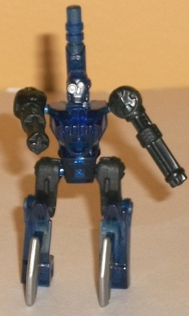
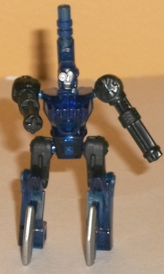
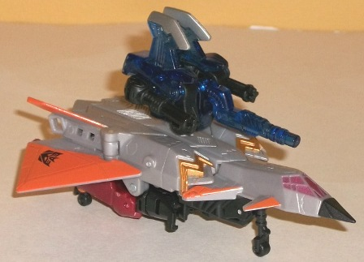
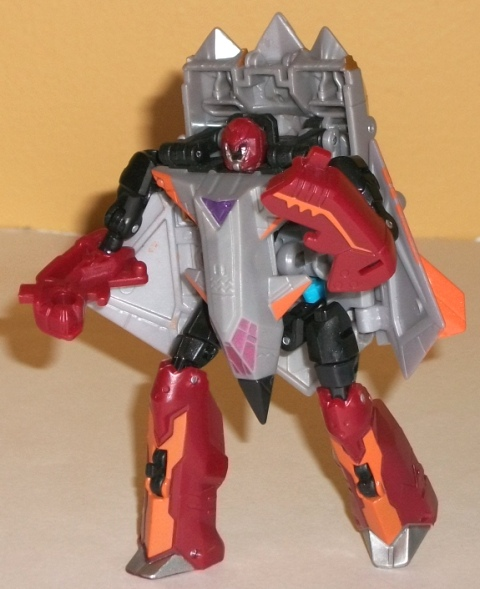
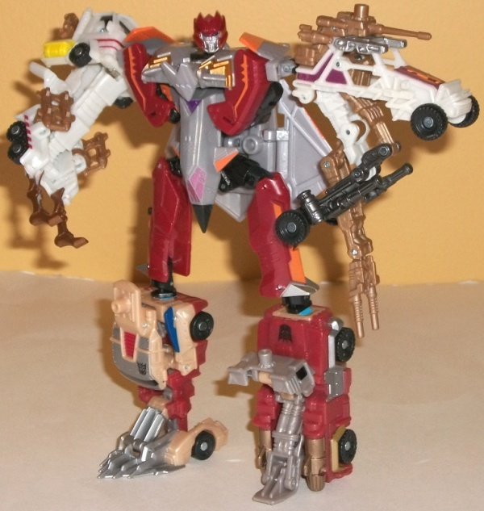

Razorbeam
Razorbeam

Allegiance : Minicon
Difficulty of Transformations : Very Easy
Color Scheme : Dark transparent blue, black, and some silver
Individual Rating : 5.5
Darkstream
w/ Razorbeam
(NOTE: Because this set is composed of repaints,
this is not a full-blown review. This mainly covers any changes made to
the set and the color scheme, and merely compares it to the original versions
of these molds. For a review on Chopster, the mold used for Razorbeam,
go
here
. For a review on Skyburst, the mold
used for Darkstream, go
here
.)
Razorbeam

Allegiance
: Minicon
Difficulty of Transformations
: Very
Easy
Color Scheme
: Dark transparent blue,
black, and some silver
Individual Rating
: 5.5
The main difference between
Razorbeam and his predecessor Chopster is the changing of the transparent
plastic color to dark blue. Given his partner's sky-based alt mode, blue
certainly works quite well with this mold, and gives him an "icy" feeling
compared to Chopster's "fiery" feeling. The silver paint on the axe blades
and the head also contrasts quite well with the black and dark blue, and
gives Razorbeam at least one light shade on his color scheme-- plus it
makes the intricate detailing on his face easier to make out when compared
to the black on Chopster's face.
No mold changes have
been made to Razorbeam.
I give Razorbeam a slight
edge over Chopster, namely because I tend to like "cool" colors over "warm"
colors, but of course your mileage may vary. The silver paint app on the
face is a definite improvement. However, one important note that makes
Razorbeam a VERY bad match for Darkstream-- Darkstream
cannot hold this
Minicon
. They can still combine using the Powerlinx ports, but Darkstream's
fist holds are too shallow to securely hold "his" Minicon. This isn't a
design flaw with either of them by themselves, so I'm not taking points
off of either of their ratings because of it, but it's a very poor pairing.
 Darkstream
Darkstream



Allegiance
: Decepticon
Difficulty of Vehicle/Robot Transformation
:
Very Easy
Difficulty of Torso Transformation
:
Easy
Color Scheme
: Light milky gray,
black, light orange, dark dull red, and some metallic gold, silver, royal
purple, and light metallic violet
Individual Rating
: 7.0
Darkstream actually has
a fairly light color scheme, despite what you'd expect from his name. The
color most common on his chassis is a light milky gray. Now, if it was
just that and the fairly neutral black parts more obvious in his robot
mode, he'd be REAL boring-- thankfully, Darkstream has a lot of great paint
apps. The light orange stripes really pop, particularly in vehicle mode.
It's a bright color, but used as an accent color as this, it really catches
the eye. It also goes great with Darkstream's dull red plastic, which is
mostly visible in his robot and torso modes (and which also goes well with
his light gray plastic). There's also a couple of sparsely-used accent
colors that contrast very well with the light gray (in the case of the
two different shades of purple on the robot chest/cockpit and the metallic
gold on the vehicle intake vents). The silver is a bit too similar to the
light gray, but it's used entirely on the dull red, where it also serves
as a nice contrast color.
No mold changes have
been made to Darkstream, though the "back flap" on the torso mode of mine
doesn't flop around quite as easily as it does on Skyburst's (though it
still falls down from the weight of a Minicon attached to it).
Darkstream has a less
realistic color scheme than his mold's predecessor Skyburst, but he also
has a much more attractive one, at least in my view. The paint apps and
secondary colors-- the dull red and light orange in particular-- really
make Darkstream shine (as odd as that sounds). If you must have a more
realistic color scheme, go with Skyburst-- but if that doesn't matter to
you, this is definitely the version of the mold you'll want to pick up
if you want one. (Just partner up his Minicon with someone else.)
Reviews by Beastbot